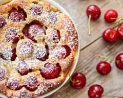

Voici quelques ressources qui vous aideront à trouver la recette qu'il vous faut, quelque soit l'occasion.
Un site où vous pouvez retrouver toutes les recettes des plats classiques de votre enfance ainsi que des desserts modernes.
Une mine d'idées et de vidéos explicatives pour impressionner vos invités par votre talent révelé
